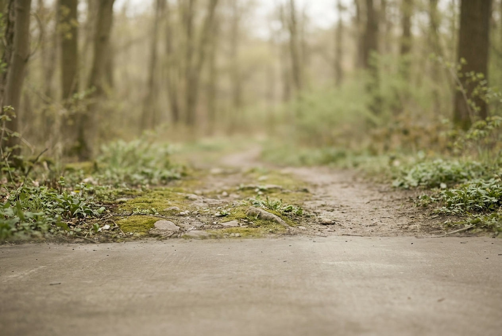

Pangolin
User research and prototyping for a modular outdoor pack that reconfigures to the way you move — backpack, sling, or chest rig, depending on the route.
A positioning framework and three prototyped carry modes, validated with 6 hikers across 2 usability rounds — adopted as the research spine for the line.

One bag is asked to be two: quiet in the city, capable on the trail.
Outdoor and urban life have blended, but gear hasn't. People move from a morning commute straight to a trailhead, yet the bag that looks right in a café reads as overbuilt downtown — and the city bag gives up the moment the trail tilts uphill. Most "crossover" packs answer this with more compartments and more straps, which only adds weight and visual noise.
The users I designed for were dual-purpose carriers — weekend hikers, urban commuters, and travellers, roughly 25–40, who value quiet aesthetics as much as function.

How might we
…let one pack adapt its silhouette and load to the moment — commute, trailhead, summit — without adding compartments or weight?
Hikers want fewer, smarter compartments — not more.
I ran discovery end to end: a competitor positioning study across nine outdoor and lifestyle brands, nine interviews spanning three user segments, and contextual observation at trailheads and on commutes. Pain points were synthesised into a positioning framework the team used to steer every later decision.
- 01
Capacity isn't the problem — context is.
People already owned enough volume. What failed was the same silhouette reading wrong in two different places.
- 02
Fewer, smarter compartments beat more.
Interviewees actively disliked extra pockets; they wanted one adaptable space, not a grid of zippers.
- 03
Comfort lives at the centre of gravity.
Perceived load depended on where weight sat against the body — not on how much there was.
"I own four bags for basically the same stuff — I just want one that doesn't look like a hiking bag in a café."— Urban commuter, 29

Designing for the crossover carrier.
Mei, 28
Weekend crossover · Taipei
Designs by day in the city, heads for the ridgelines most weekends. Owns capable gear but hates looking "fully kitted out" on a Monday morning.
Goals
- One bag for both worlds
- Carry comfortably under load
- Look considered, not technical
Frustrations
- Switching bags by context
- Pockets she never uses
- Weight that pulls off her back
City morning
Packs laptop and daily kit.
Pain — reads as trail gear at the desk.
Commute
Crowded transit, tight space.
Pain — bulky silhouette, awkward to hold.
Trailhead
Switches into outdoor mode.
Pain — re-packs, or carries a second bag.
Ascent
Load shifts as the trail tilts.
Pain — weight drifts off centre of gravity.
Café after
Wants to slim back down.
Opportunity — reconfigure without unpacking.
One bag, many silhouettes
Adapt the form, not the contents.
Load follows the body
Keep mass at the centre of gravity in every mode.
Quiet in the city, capable on the trail
Restraint is the feature, not a compromise.
From three directions to one modular system.
Discovery opened with three directions — a diagonal long-wallet, a clip-on multi-layer pouch, and a vertical crossbody. Testing each against the positioning framework pointed past single objects toward one modular pack whose volume redistributes between carry modes.


Fixed straps with stitched modules — but under a real load the weight migrated away from the spine and the bag sagged into the wrong silhouette.
Locking clips fix the heaviest module against the centre of gravity in all three modes, and reconfiguring drops to a single one-handed motion.
A research spine for what came next.
Two usability rounds with six hikers on short trails tested whether the carry modes were not just possible, but reachable in the moment.
"I forgot I was wearing the chest setup until someone pointed at it."— Usability participant, weekend hiker
What I learned
- Early research, done honestly, makes every downstream decision cheaper.
- Modularity only counts if it's effortless — if reconfiguring takes thought, it won't happen.
- A positioning framework is a decision tool, not a deliverable.
If I continued
- Durability testing on the locking clips over a season of use.
- A women's-fit harness variant from the same module system.
- A content study: what 40% actually travels between modes.
My contribution
I led the discovery phase end to end — competitor positioning, interviews, synthesis, persona and journey, and the usability-test protocol — and partnered with a product designer through four rounds of physical prototyping.